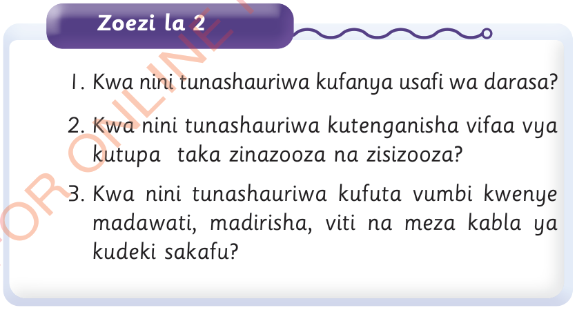

Zoezi la 2
Kwa nini tunashauriwa kufanya usafi wa darasa?
1.Kwa nini tunashauriwa kufanya usafi wa darasa?
2.Kwa nini tunashauriwa kutenganisha vifaa vya kutupa taka zinazooza na zisizooza?
3.Kwa nini tunashauriwa kufuta vumbi kwenye madawati, madirisha, viti na meza kabla ya kudeki sakafu?